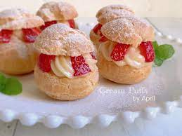
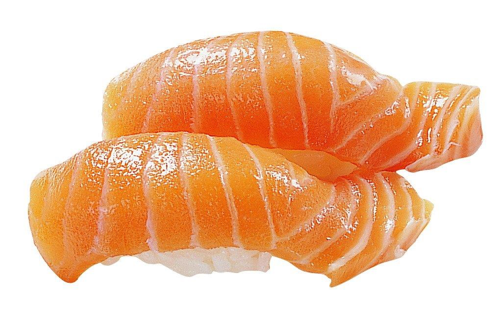
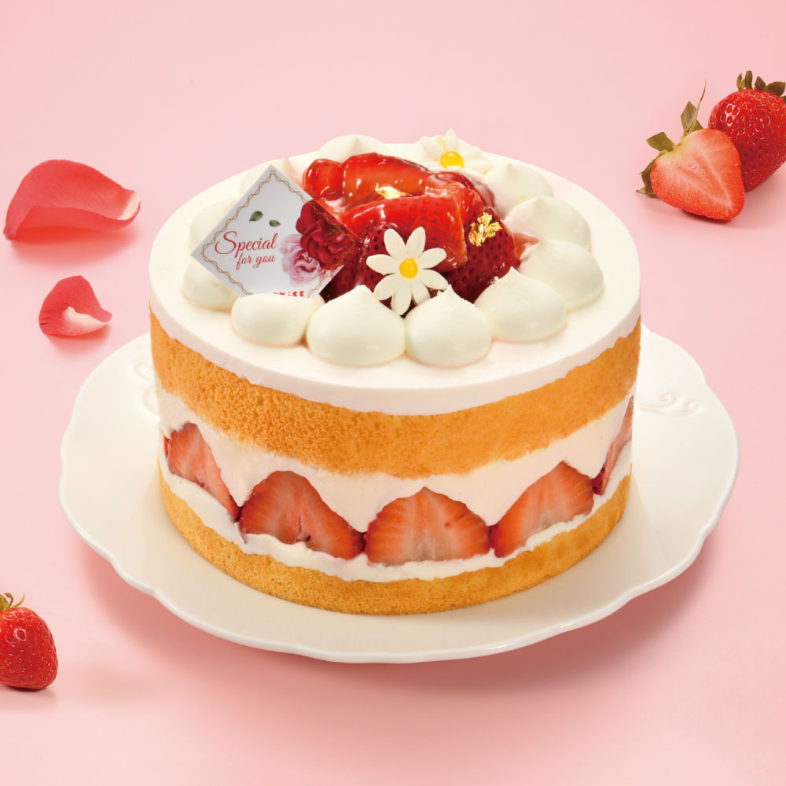

|
 |
 |
 |
| 夏威夷披薩 |
草莓小泡芙 |
鮭魚壽司 |
法式草莓芙蓮 |
法式草莓芙蓮材料
主要材料：
- 草莓（新鮮的草莓最好）
- 芙蓮餡料（例如鮮奶油、糖、香草精）
- 法式麵團
- 糖霜（用於灑在芙蓮上的裝飾）
- 巧克力醬（作為裝飾，可選）
- 4 個大蛋
- 1 杯砂糖
- 1 杯麵粉
- 1/4 杯玉米澱粉
- 1 茶匙泡打粉
- 1/4 茶匙鹽
- 1/2 杯無鹽奶油，融化
- 1/4 杯牛奶
- 1 茶匙香草精
香草奶油：
裝飾：
- 製作蛋糕：
- 預熱烤箱至攝氏180度（華氏350度）。
- 將蛋和砂糖混合攪拌，直到混合均勻。
預熱烤箱至攝氏180度（華氏350度）。
將蛋和砂糖混合攪拌，直到混合均勻。
將麵粉、玉米澱粉、泡打粉和鹽混合在一起，逐漸加入蛋糊中。
加入融化的奶油、牛奶和香草精，攪拌均勻。
將麵糊倒入預備好的蛋糕模具中，烘烤約25-30分鐘，或直到蛋糕表面彈回觸摸。
製作香草奶油：
在攪拌碗中打發鮮奶油，逐漸加入砂糖，直到形成堅挺的奶油。
加入香草精，繼續打發至混合均勻。
組合芙蓮：
將蛋糕切成兩片，將一片放在蛋糕盤上。
在蛋糕上鋪上一層香草奶油。
加入新鮮草莓切片，確保均勻分佈。
放上第二片蛋糕，再鋪上一層香草奶油。
裝飾頂部，用新鮮草莓片擺成花朵的形狀。
冷藏：
將製作好的法式草莓芙蓮放入冰箱冷藏數小時，
讓奶油凝固並使口感更佳。
這是一個基本的法式草莓芙蓮食譜，
你可以根據個人口味和喜好進行一些變化。
祝你製作成功，享受美味的法式甜點！